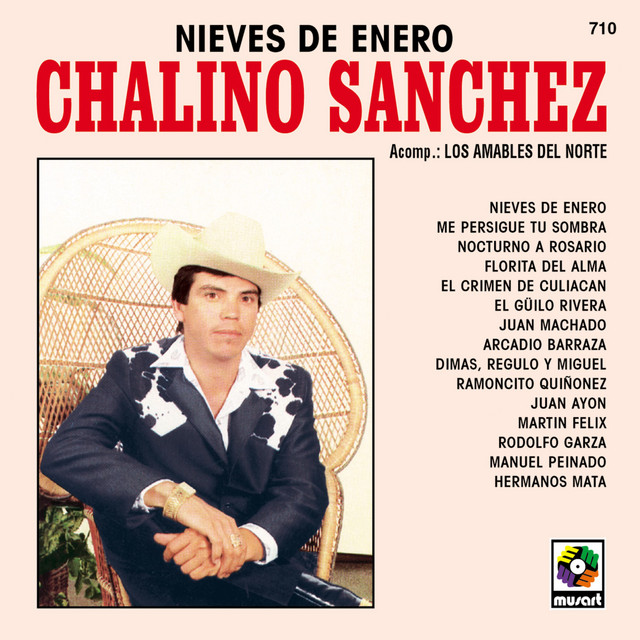

Top 100 Single Charts México
Chalino Sanchez
2021 . Charts . 100 songs
Play all
Add to
More
-
1. Nieves de enero
Catlino Sanchez feat Jay Z
3: 33
Dary Records
-
2. Panda
Cattee
4:06
Dary Records
-
3. Can't Stop the Feeling!
Catin Cimberlake
3:56
Dary Records
-
4. Work From Home
Cat Harmony feat Colla
3:34
Dary Records